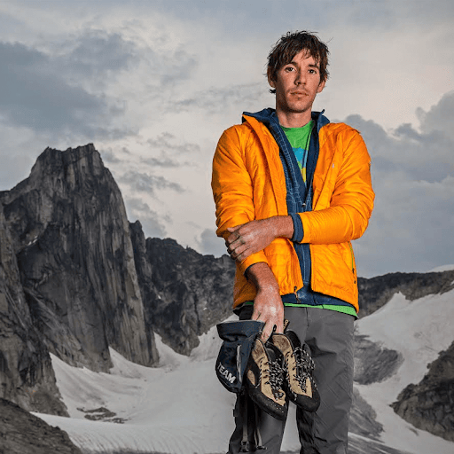
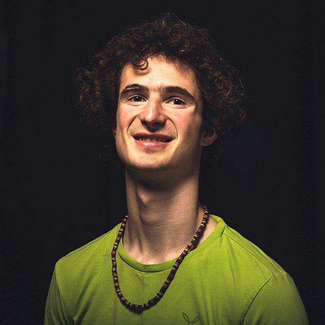
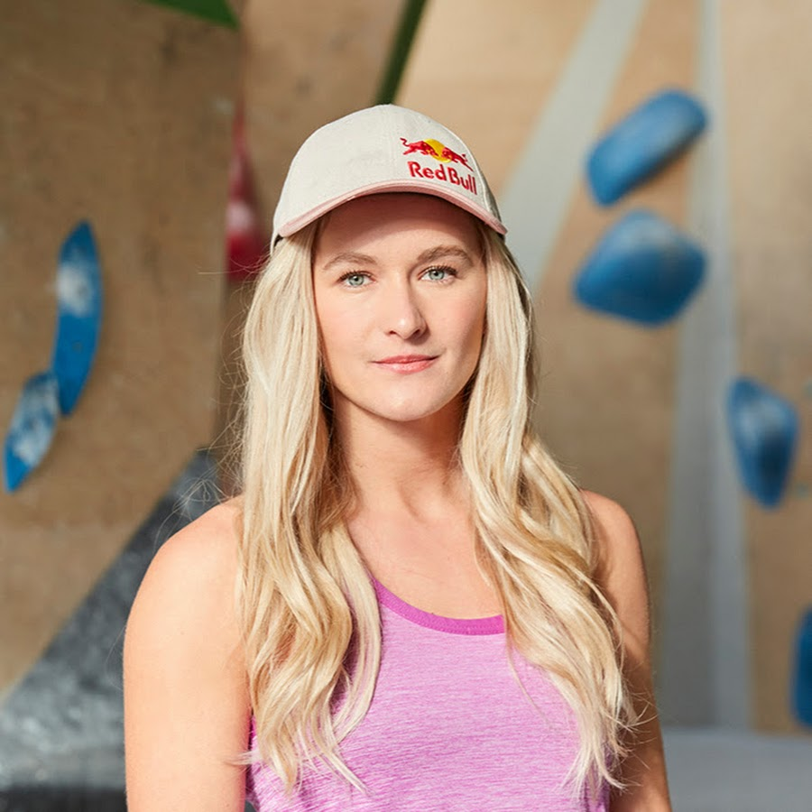

FAMOUS CLIMBERS
-

ALEX HONNOLD
It’s hard to talk about rock climbers without mentioning Alex Honnold. He’s definitely the biggest climbing star of any time period and is known for his spectacular free solo climbs, however Honnold estimates that only around 5% of his ascents are free solo. While climbing free solo, he listens mostly to rock and punk and only turns the music off for more difficult problems. He says he’s never been scared of dying while free soloing, that’s not to say he’s never been scared of death however.
Born in California, Alex Honnold likes to spend most of his time climbing in Yosemite Valley and the Nevada mountains. However, as Honnold lives in a van most of the time, he could be anywhere as long as “the weather is good”. Although he doesn’t like living in a van, he likes the freedom of knowing he can live anywhere he wants.
-

ADAM ONDRA
Adam Ondra is probably the best rock climber in the world today. Ondra is still quite young, being born in February 1993 – at the time of writing he’s 26 years old. At 8 years old Ondra was already onsighting 7b+ routes. By the age of 13 he had redpointed his first 9a. He’s famous for his grunting and growling on techniques and moves that he finds difficult exuding a fierce aggression on the wall and showing the emotion he applies to every single transition. He seems to have an extraordinary focus on the task at hand. If Ondra falls off the climbing wall you can hear the passion and anger in his voice – he lets out roars, curses and screams due to his failure. This reveals his passion and drive to succeed which is probably why he’s the best in the world. Although he may not look the part being lanky, skinny, and lacking a lot of visible muscle, Ondra is deceptively strong when he’s on a climbing wall.
-

SHAUNA COXSEY
Shauna Coxsey MBE is an English rock climber who is most famous for being the winner of the IFSC Bouldering World Cup in 2016 and 2017 at 23 and 24 years old which easily puts her as one of the best female boulderers of all time. In 2013 Coxsey sent her first 8B (aka V13) bouldering problem after topping “Nuthin’ But Sunshine”. In 2014 she narrowly missed the top spot at the IFSC Bouldering World Cup finishing in second place overall. Later that year she would become the third woman to ever send a bouldering problem rated 8B+ (aka V14) after topping “New Baseline” in Magic Wood. She’s the first ever British female to climb V12, V13, and V14 rated boulders.
In 2016, she was appointed a Member of the Order of the British Empire (MBE) at the birthday honors for her services to climbing. Shauna says she started climbing at four years old after being inspired by Catherine Destivelle, a French climber. She is very famous in the climbing community especially on social media where she has over 330k followers on Instagram and she posts very often about her travels, training, climbing and life.